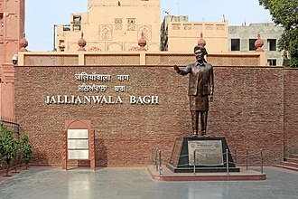

Jallianwala Bagh is a historic garden and 'memorial of national importance' close to the Golden Temple complex in Amritsar, Punjab, India, preserved in the memory of those wounded and killed in the Jallianwala Bagh Massacre that occurred on the site on the festival of Baisakhi, 13 April 1919. The 7-acre (28,000 m2) site houses a museum, gallery and several memorial structures. It is managed by the Jallianwala Bagh National Memorial Trust. It was renovated between 2019 and 2021.
History
The 7-acre (28,000 m2) site is located in the vicinity of the Golden Temple complex. Jallianwala Bagh or the garden of the Jallah-man, with its well, implies that it was once green and flowering.Over the years it had become popular as a recreation ground and an area of rest for those visiting the nearby Golden temple. In 1919, it was a dried out plot and was surrounded by tightly packed multi-occupancy buildings dividend with some narrow streets and holding only one entrance and exit route. It was unoccupied and surrounded by a wall. The place derives its name from that of the owner of this piece of land during the rule of the Sikh Empire.It was then the property of the family of Himmat Singh Bains, who originally came from the village of Jalla district of the Punjab in India. The family were collectively known as Jallewalle.

Massacre
In 1919, in response to excluding Mahatma Gandhi from visiting Punjab, the secret deportation of Saifuddin Kitchlew and Satyapal on 10 April and the reactions to the Rowlatt Act, Punjab had witnessed attempts of Indians to gather and protest. On the morning of Baisakhi, 13 April 1919, to the sound of military drums by the cities town criers, 19 locations around the city were read out Brigadier General R.E.H. Dyer's new rules.He had placed restrictions on leaving the city without a permit, banned all "processions of any kind"and any congregation of more than four people, and announced that "any person found in the streets after 8 pm will be shot". The announcements came on a background of noise and unusual heat, missing key locations around the city, meaning that the notice was not widely disseminated. Dyer was subsequently informed at 12.40 pm that day, that a political gathering was to be held at Jallianwala Bagh. By the time Dyer arrived with 90 Sikh, Gurkha, Baloch, Rajput troops from 2-9th Gurkhas, the 54th Sikhs and the 59th Sind Rifles, there was a crowd of 20,000; a mix of speakers, listeners, picnic makers, men, women and children of all ages, including Sikhs, Hindus, Muslims and Christians. Dyer then ordered his troops to fire at the crowds.1,650 rounds were fired and the number killed and injured have since been disputed.
Memorial site
In 1920, as a result of the massacre, a Trust was formed with the aim of creating a memorial at the massacre site.During the troubles of 1947 several surrounding buildings were destroyed. In 1951, the government of India established the site as a 'memorial of national importance'. The site was renovated between 2019 and 2021.The central government had earmarked ₹20 crore (US$2.5 million) in 2019 for the commemoration of the centenary of the massacre. The memorial was closed to the public in February 2019 for the work and reopened in August 2021. The renovation was criticized by various historians, political leaders and some of the kin of the martyrs. Many claimed that the renovations were improper and had erased the tragedy of the massacre .at the top of the peak.